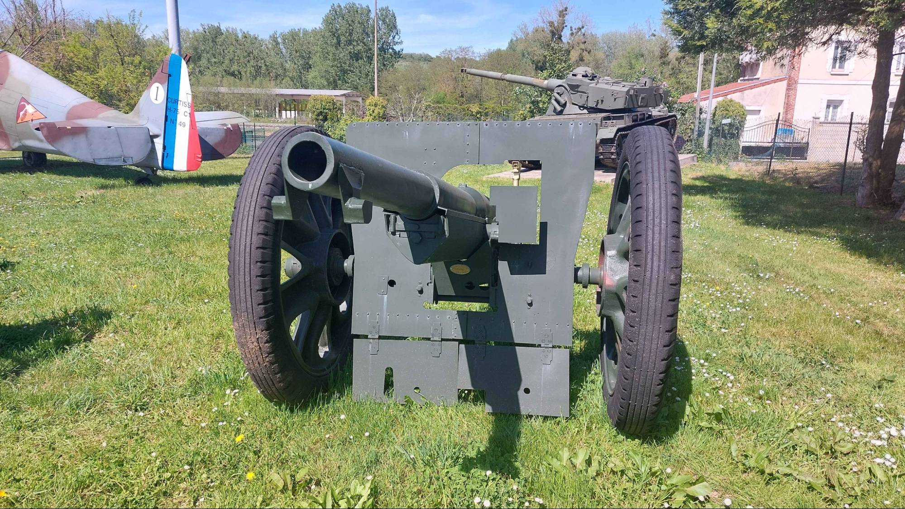
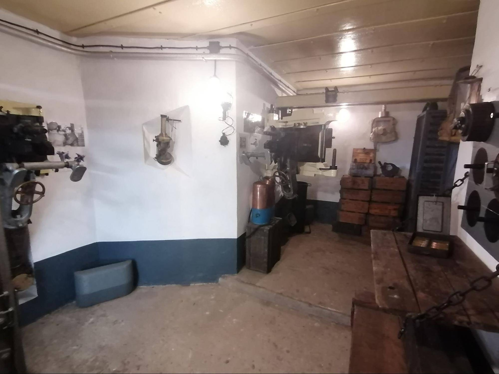
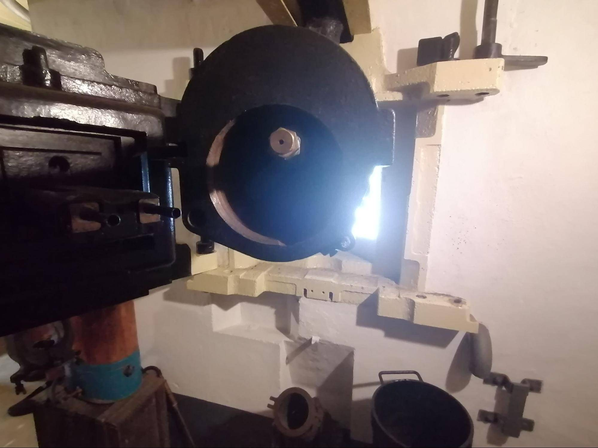
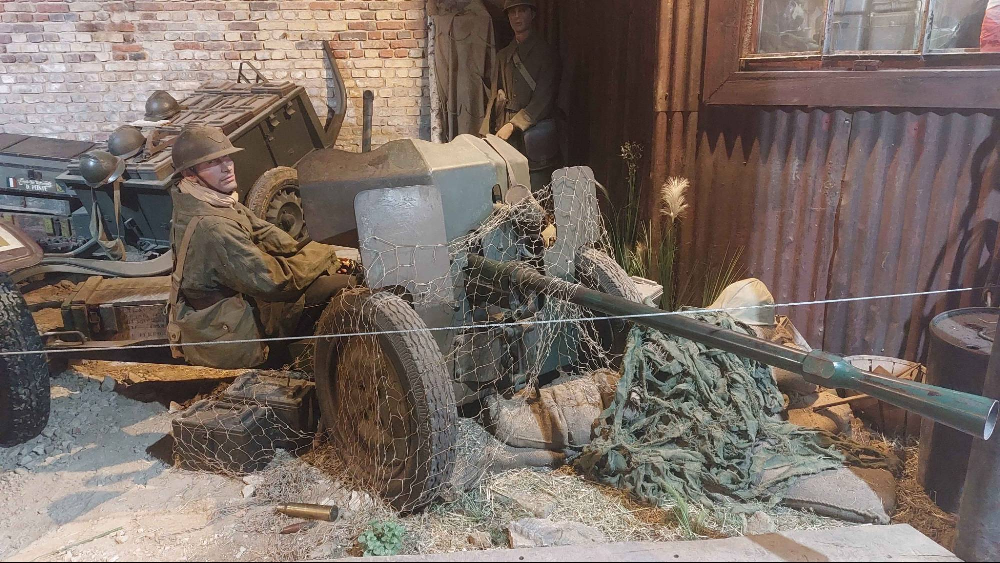
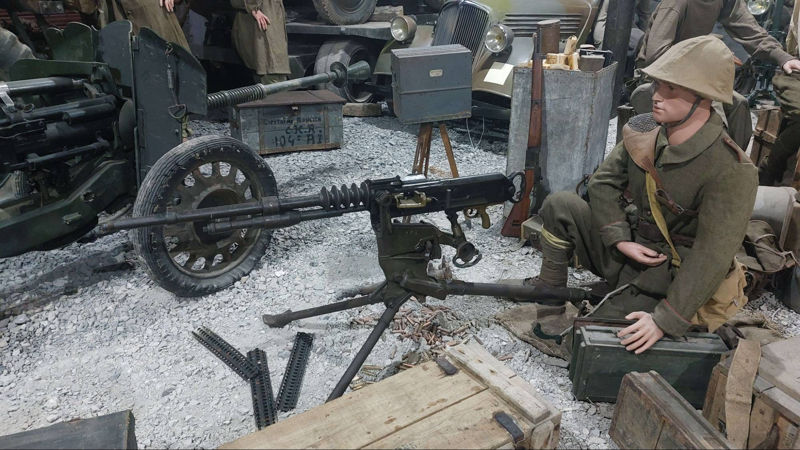
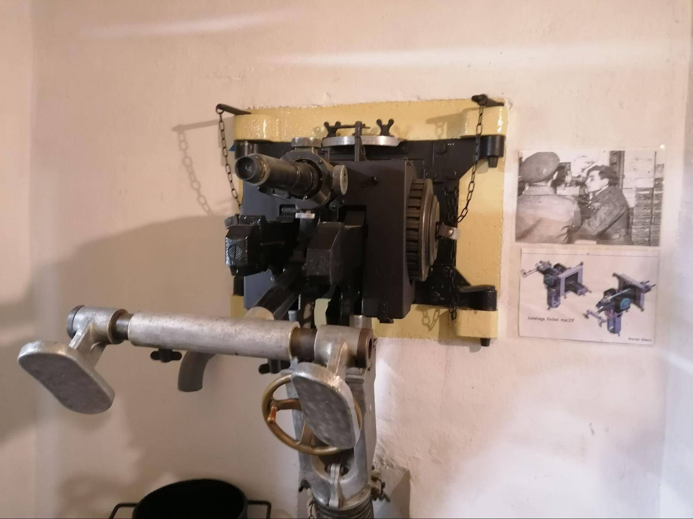
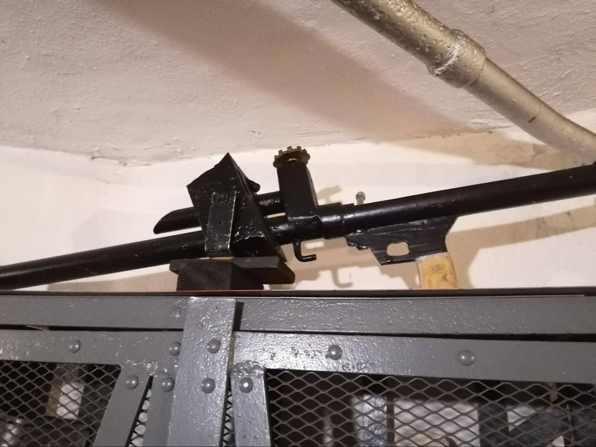
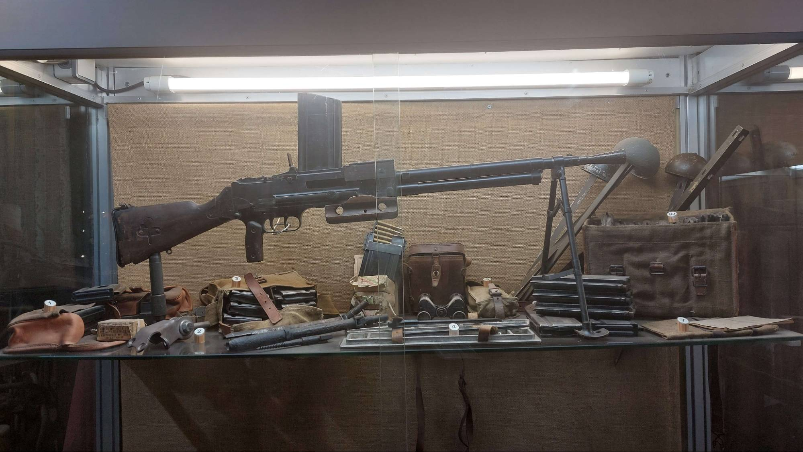

Le canon de 75 mm modèle 1897 est l’une des armes françaises les plus célèbres de la Première et de la Seconde Guerre mondiale. Mis au point à la fin du XIXe siècle, il fut adapté aux fortifications de la Ligne Maginot et de la ligne Daladier.
Le canon de 75 possédait un système de recul hydropneumatique révolutionnaire permettant au tube de reculer sans déplacer l’affût.
Grâce à ce système, le canon pouvait tirer rapidement sans devoir être remis en position après chaque coup.
Dans les fortifications, les pièces étaient installées :
Le 75 mm constituait la principale arme d’appui des ouvrages français.

Un canon de 75 au musée france 40 de Fismes.
Le canon antichar de 47 mm modèle 1934 était l’une des armes antichars les plus puissantes de l’armée française en 1940. Développé spécialement pour les fortifications, il équipait les casemates et les entrées d’ouvrages.
Le canon utilisait une culasse à vis de type Nordenfeld et un double frein hydraulique absorbant le recul.
La pièce était suspendue à un chariot roulant sur un bi-rail fixé au plafond de la chambre de tir.
Le canon pouvait être remplacé rapidement par un jumelage de mitrailleuses Reibel MAC 31 grâce à un système interchangeable installé dans la même trémie blindée.
Les obus perforants du 47mm étaient capables de traverser tous les blindages allemands rencontrés en 1940.

Canon de 47 suspendu à un rail.

Canon de 47 de la casemate du mont des bruyères.
Le canon de 25 mm était une arme antichar légère utilisée dans les petits blockhaus et les positions de campagne.
Le canon tirait des obus perforants capables de percer les blindages légers des automitrailleuses et des chars légers ennemis.
Sa petite taille permettait de l’installer facilement dans des blockhaus plus simples que ceux de la Ligne Maginot principale.
Même si sa puissance devenait insuffisante contre les chars lourds allemands les plus récents, il restait efficace contre de nombreux véhicules de 1940.

Un canon de 25 au musée France 40 de Fismes.
La mitrailleuse Hotchkiss modèle 1914 était une arme automatique lourde très robuste utilisée dans les fortifications françaises.
La mitrailleuse fonctionnait grâce à l’emprunt des gaz produits lors du tir.
Sa conception très solide lui permettait de fonctionner longtemps sans panne ni surchauffe importante.
Dans les fortifications, elle était souvent installée :
Elle servait principalement à créer des tirs croisés entre plusieurs ouvrages afin d’empêcher toute progression ennemie.

Une mitrailleuse Hotchkiss au musée france 40 de Fismes.
Le jumelage Reibel MAC 31 constituait l’arme automatique principale des ouvrages fortifiés français.
Le système utilisait deux armes montées côte à côte.
Pendant qu’une mitrailleuse tirait, l’autre pouvait refroidir ou être rechargée, permettant ainsi un feu presque continu.
Dans certains ouvrages, le jumelage pouvait être retiré afin d’installer à sa place le canon antichar de 47 mm dans le même créneau blindé.

Le jumelage de mitrailleuses de la casemate du mont des bruyères.
Le mortier de 50 mm modèle 1935 était une arme à tir courbe conçue spécialement pour les fortifications. Son développement débute dès 1931 à la Manufacture d’Armes de Châtellerault.
Le mortier tirait des projectiles explosifs empennés selon une trajectoire courbe.
La portée était réglée par un système d’échappement des gaz.
Le mortier pouvait être installé :
Cette arme était particulièrement utile pour atteindre les ennemis invisibles depuis les armes à tir direct.
Cependant, les mortiers installés dans les cloches se révélèrent parfois vulnérables aux tirs ennemis directs durant les combats de 1940.

Un mortier de 50mm à la casemate du mont des bruyères.
Le fusil-mitrailleur modèle 1924/29 était l’arme légère standard de l’armée française.
Le FM 24/29 utilisait un système à emprunt de gaz permettant le tir automatique.
Compact et facile à utiliser, il était parfaitement adapté aux espaces réduits des fortifications.
Il pouvait être déplacé rapidement entre plusieurs créneaux afin de couvrir différents secteurs.

Un FM 24/29 au musée france 40 de Fismes.